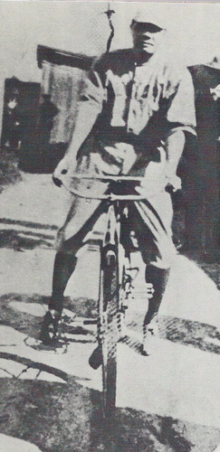

![]()
This whole thing should be considered a working draft. It is back-dated to the last major revision in December 2013. Some of the different accounts of Babe Ruth in Fayetteville are contradictory and confusing - more work is really needed to parse through the variations on the stories involving the bicycle. Another version of this post that includes the footnotes can be found in this Google Doc.
Babe Ruth never owned a bicycle growing up in Baltimore. Born at his grandfather’s modest rowhouse on Emory Street in 1895, George Herman Ruth spent his first several years moving here and there in southwest Baltimore. At age seven, he entered St. Mary’s Industrial School for Boys - a reformatory and orphanage on Wilkens Avenue established in 1866. At St. Mary’s, George learned to play baseball and at in early 1914 signed a contract with Jack Dunn, the owner and manager of the Baltimore Orioles.
By March, George and his teammates had arrived in Fayetteville, North Carolina where he started his life-long love of bicycles. On a Wednesday evening, March 18, 1914 - a little over a week since his first game in professional baseball - George hurried out after dinner to meet a new acquaintance - one of a handful of local boys who biked out to the field to watch the Orioles train. That afternoon, the boy had offered George a chance to borrow his bike after dinner and George lept at the opportunity.
While biking through town and gaining a bit of confidence, Babe Ruth decided to show off. He rode past the hotel where the Orioles had been staying, riding on the wrong side of the road and waving to a group of teammates out front. His teammates saw what George did not – a large truck bearing down on the novice cyclist.
Another account from Babe: The Legend Comes to Life by Robert W. Creame descibes a similar incident:
“One day, barreling around a corner, he missed running head-on into Dunn and Egan only by braking violently and twisting the bike to one side. He smacked into the back of a wagon and ended up on the ground, the bike draped around him, grinning at Dunn with cheerful embarrassment. Dunn looked at him sourly and said,”If you want to go back to the Home, kid, just keep riding those bicycles.”
In a minor variation on this theme, Allan Wood quotes Dunn as shouting, “You wanna go back to that school? You’re a ballplayer, not a goddman circus act!”
After another bicycle accident soon followed, Orioles scout Sam Steinman remarked to sportswriter Roger Pippen, “If Dunn doesn’t shackle that new babe of his, he won’t be a Rube Waddell in the rough, he’ll be a babe Ruth in the cemetery.” Pippen’s next article for the Baltimore American, published March 19, 1914, described a “young fledgling” ball player with the name “Babe Ruth” - the first time the nickname appeared in print.
When the regular season began in late April, the Orioles returned to Baltimore. Like all the players, Ruth received food and lodging during the spring training but did not get paid until the regular season began. When Ruth received his first paycheck, the first purchase he made was a bicycle. According to his recollections from The Babe Ruth Story, told to Bob Considine, Babe later shared:
“I went out and celebrated, just as soon as I got my first paycheck - $100. I bought a bicycle, something that I had wanted and often prayed for through most of my young life. Most of the Orioles, of course, had cars, but none of them was as proud as I was, riding the first possession of my life through the old streets of Baltimore.”
In his book, Robert Creamer contradicted Ruth’s recollections reporting the envelop had only $50 but still “more money than Ruth had ever seen” but reflected on the new bicycle writing: “Tooling around Baltimore on it, [Ruth] felt richer than God.”

Ruth’s history of collisions continued even after he bought the new bike (he bought a motorcycle and a car soon after). Newark pitcher Al Schacht was run down by bicycle ridden by a “gangling, moon-face kid” with a handful of hotdogs. Schacht yelled, “Why the hell don’t you watch where you’re going, Rube?” The “kid” replied “Sorry, mister, I almost dropped a hotdog and my hand slipped.” Schacht was even more surprised a short time later when he spotted the kid on the field wearing the Orioles uniform.
A few years later, just days after Babe Ruth and the Red Sox won the World Series in Boston, Ruth picked up his share of the winnings and spent the evening as the official “starter” for bike and motorcycle races at the Revere Beach track.
Ironically, Ruth’s success and the growing popularity of baseball eclipsed the long-standing interest in bicycle racing that made professional cyclists some of the highest paid athletes in the United States in the early 20th century. The circumstances had been quite the opposite a few decades earlier when, after the invention of the safety bicycle in 1885, cycling experienced a boom in popularity that rivaled baseball and even threatened attendance at the games:
“The owners also tried to capitalize on the bicycle craze of the ’nineties, but without financial success. According to Al Reach, thousands of dollars were lost in laying out tracks for bike races in many of the baseball parks.”
One final note - I pulled this quote from some memoir but now I can’t find the source. Frustrating!
When we got outside, Babe looked around frantically for a taxi but there wasn’t one on the street. Suddenly, two kids on bikes came pedaling around the corner. Babe jumped in front of them, and they hit their brakes so they wouldn’t crash into him.
“Hey, kids, how much for the bicycles?” asked Babe.
“Huh?” the kids said.
“Here,” Babe said, pulling a $20 bill out of his pocket….
“Y’know how to ride a bicycle?” Babe asked me.
“Well, sure…”
“Then let’s go!”
Back when I visited him in 1932, Babe Ruth drove me to Wrigley Field in Chicago. I almost died. Well, he rode a bicycle the same way– like a maniac. He took off and started pedaling furiously, weaving around street vendors, potholes and garbage cans. Little old ladies were diving out of his way. Cars were honking at him, and I wasn’t sure if it was…
Reuse
Citation
@online{pousson2013,
author = {Pousson, Eli},
title = {“{If} You Want to Go Back the {Home,} Kid, Just Keep Riding
Those Bicycles.”},
date = {2013-12-04},
url = {https://elipousson.github.io/posts/2013-12-04-if-you-want-to-go-back-the-home-kid-just-keep-riding-those-bicycles},
langid = {en}
}